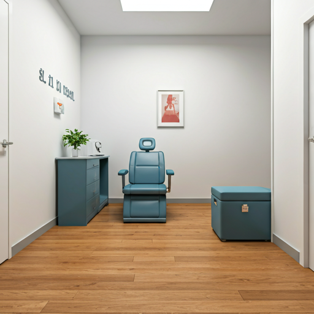
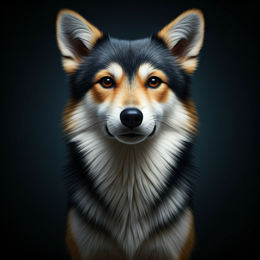
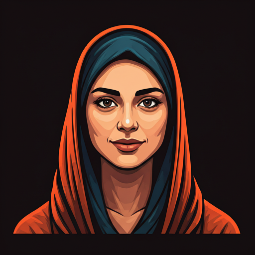

"ATAPARK VETERİNER KLİNİĞİ"
"Yenilikleri takip edip, Veteriner Hekimlik ve medikal donanımı birleştirip, hayvan refahını en üst seviyede tutmak." ilkesiyle 2015 yılında yola çıktık. ATAPARK VETERİNER KLİNİĞİ olarak geçen bu süreçte sayısız evcil hayvan dostumuza hizmet ettik, onlar için en iyisi olduğunu kabul ettiğimiz ...

Devamı...GENEL VE ÖZEL CERRAHİ
Küçük dostlarımızın başlarına zaman zaman gelen yapısal prob...

PET KUAFÖR
Seevimli dostlarımızın tıraş, banyo, tırnak kesimi, göz-kulak temiz...

MAMA VE PET MALZEMELER
Kedi ve köpeklerimizin doğru beslenmeleri, yaşlarına, boy/kilo oranlar...
LABORATUVAR HİZMETLERİ
Hızlı ve güvenilir tanı için tam donanımlı laboratuvarımız hizmetinizde...
AŞI TAKVİMİ
Evcil hayvanlarınızın sağlıklı bir ömür sürmesi için düzenli aşı takibi...
DAHİLİYE
İç hastalıkların teşhis ve tedavisinde uzman kadromuzla yanınızdayız...
GENEL VE ÖZEL CERRAHİ
Küçük dostlarımızın başlarına zaman zaman gelen yapısal prob...
PET KUAFÖR
Seevimli dostlarımızın tıraş, banyo, tırnak kesimi, göz-kulak temiz...
MAMA VE PET MALZEMELER
Kedi ve köpeklerimizin doğru beslenmeleri, yaşlarına, boy/kilo oranlar...
ÜRÜNLER
Hayvanların uzun, mutlu ve sağlıklı yaşayabilmeleri için katma değere sahip kaliteli malzemeler.